Cap. 14 Modelo linear misto
Objetivos do capítulo
1. Apresentar a ANOVA de Medidas Repetidas.
2. Realizar passo-a-passo a modelagem analítica.
3. Verificar os pressupostos e implementar as correções sugeridas.
4. Escrever os resultados.
O modelo linear misto (LMM) é um modelo linear, frequentemente utilizado para trabalhar dados longitudinais ou de medidas repetidas, que possibilita definir tanto parâmetros populacionais (efeitos fixos), como coeficientes individuais (efeitos aleatórios), além do erro experimental. Conceitualmente, pode ser apresentado como:
\[y_i = \underbrace{X_i\beta}_\text{Efeito fixo} + \underbrace{Z\gamma + e_i}_\text{Efeito aleatório}\]
Onde:
\(\beta\) representa todos os termos fixos
\(\gamma\) representa os termos aleatórios (assumidos como normalmente distribuídos)
\(e\) representa o erro/resíduo
Pragmaticamente, este modelo oferece mais flexibilidade à ANOVA de medidas repetidas e sua utilização vem ganhando mais espaço em Psicologia e áreas da saúde (Gueorguieva & Krystal, 2004).
Os efeitos fixos são compartilhados por todos os indivíduos, enquanto os aleatórios são específicos de cada um dos participantes. Com isso, a trajetória de cada indivíduo pode ser modelada, permitindo que um subconjunto dos parâmetros de regressão seja definido como aleatório.
Tanto O LMM, como a ANOVa de Medidas Repetidas costumam ser utilizados em dados longitudinais. A tabela a seguir apresenta algumas das principais características de ambas as análises.
| Característica | ANOVA (MR) | Modelo Linear Misto |
|---|---|---|
| Sujeitos medidos em vários momentos | Sim | Sim |
| Dados completos em todos os segmentos | Sim | Não |
| Estimativas de tendências individuais | Não | Sim |
| Covariáveis tempo-dependentes | Não | Sim |
| Complexidade computacional | Baixa | Alta |
14.1 Pesquisa
A base desta pesquisa está disponível em formato R (Rdata) e em CSV, que é lido pelo JASP. Clique na opção desejada.
Base R: R - Base Lidia Carprofeno
Base JASP : Base CSV - Lidia Carprofeno longo
A esse momento, vamos ter como referência de análise a pesquisa intitulada “Avaliação psicométrica em português do indicador de dor crônica de Helsinki em cães com sinais crônicos de osteoartrite”, que tem como primeira autora Lídia Matsubara e eu sou coautor. Os dados dessa pesquisa foram previamente utilizados no capítulo de ANOVA de medidas repetidas.
Nessa pesquisa, temos um grupo controle e um grupo experimental e todos os participantes foram avaliados em 5 momentos diferentes do tempo: 1 semana antes do início do tratamento (W2), imediatamente antes do início do tratamento (W0), duas semanas e quatro semanas após o tratamento ter iniciado (S2 e s4) e após uma semana da retirada do tratamento (s6). Trata-se de um delineamento 2x5, considerando os 2 grupos e as 5 medições ao longo do tempo.
14.2 execução no R
A base dados reúne as varáveis da pesquisa. No entanto, ela está em formato largo (wide). Na maioria das vezes, o formato longo é o mais tipicamente encontrado para análises longitudinais e, por isso, será imeplementado pela função pivot_longer do tidyverse.
tratamento <- dados %>%
mutate(id = row_number()) %>%
select(id, grupo_dummy,starts_with("total_")) %>%
pivot_longer(-c(id,grupo_dummy),
names_to = "tempo",
values_to= "resultado") %>%
rename(grupo = grupo_dummy) %>%
filter(grupo < 3) %>%
mutate(grupo = factor(
if_else(grupo == 1, "Placebo", "Experimental"))) %>%
mutate(tempo = factor(case_when(
tempo == "total_w4" ~ "antes",
tempo == "total_w0" ~ "no_dia",
tempo == "total_s2" ~ "semana_2",
tempo == "total_s4" ~ "semana_4",
tempo == "total_s6" ~ "semana_6",
)))As variávies neste conjunto de dados são as seguintes:
tratamento %>% names()## [1] "id" "grupo" "tempo" "resultado"Dessa forma:
id Identificação única de cada participante.
grupo Indica o grupo em que o participante foi alocado, tal como previamente apresentado (controle ou experimental).
tempo Indica cada um dos 5 pontos de medida.
resultado Apresenta os valores obtido pela escala utilizada. Quão maior o resultado, mais intenso são os sintomas.
Como uma primeira etapa, é importante criar tabelas e gráficos. Esses dois recursos apresentam as principais características dos grupos, bem como seus resultados.
arsenal::tableby(tempo ~ resultado + grupo,
test = FALSE,tratamento) %>%
summary() | antes (N=40) | no_dia (N=40) | semana_2 (N=40) | semana_4 (N=40) | semana_6 (N=40) | Total (N=200) | |
|---|---|---|---|---|---|---|
| resultado | ||||||
| Mean (SD) | 16.475 (6.437) | 16.700 (6.669) | 15.675 (6.719) | 14.250 (6.740) | 15.425 (8.430) | 15.705 (7.020) |
| Range | 0.000 - 29.000 | 0.000 - 28.000 | 0.000 - 28.000 | 0.000 - 27.000 | 0.000 - 34.000 | 0.000 - 34.000 |
| grupo | ||||||
| Experimental | 19 (47.5%) | 19 (47.5%) | 19 (47.5%) | 19 (47.5%) | 19 (47.5%) | 95 (47.5%) |
| Placebo | 21 (52.5%) | 21 (52.5%) | 21 (52.5%) | 21 (52.5%) | 21 (52.5%) | 105 (52.5%) |
O gráfico de linhas tende a ser utilizado para medidas longitudinais e encontra-se a seguir.
ggplot(tratamento, aes(x=tempo, y=resultado,
group=grupo, color=grupo)) + #variaveis
stat_summary(fun = mean, geom = "line", size=1.0,
aes(linetype = grupo)) + #linha
stat_summary(fun="mean", geom="point", size=2,
aes(shape = grupo)) + #pontos
stat_summary(fun.data = mean_se,
geom = "errorbar",size=1) #barra de erro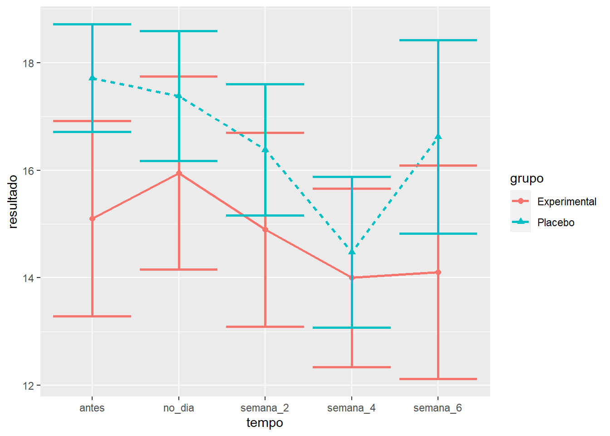
Os resultados já deixam a impressão de que ambos os grupos tiveram desfechos próximos durante toda a pesquisa. Entretanto, testes formais precisam ser feitos para se chegar a esta conclusão. O R oferece alguns pacotes específicos para modelos mistos. Os pacotes lme4 e lmerTest serão utilizados aqui.
library(lme4)
library(lmerTest)A estrutura computacional da sintaxe do lme4 é bastante similar aos modelos tradicionais de regressão que utilizam a função lm. No entanto, agora é possível incluir tanto efeitos fixos como aleatórios. Quando os termos são definidos como correlacionados, se utiliza uma barra verticail (|). Quando são definidos como descorrelacionados, duas barras verticais (||) são utilizadas.
Nesta pesquisa, se assumiu que cada participante apresentava seu próprio intercepto, ou seja, seu próprio valor de início. A sintaxe a seguir cria o modelo e o armazena os resultados no vertor mod_lme.
mod_lme <- lmer(resultado ~ tempo*grupo + (1|id) , data = tratamento)Repare que esse modelo é composto pelo se seguintes componentes:
1. Os resultados são definidos na variável resultado
2. efeito fixo do tempo
3. efeito fixo do grupo,
4. efeito fixo da interação tempo x grupo
5. efeito aleatório do id, indicando um intercepto aleatório e específico por participante
Uma vez que o modelo já foi criado, agora é necessário recuperar seus resultados. É importante notar que O pressuposto da normalidade é necessário e ele já foi acessado (e aceito) anteriormente. Conforme dito ao início do capítulo, O LMM relaxa o pressuposto esfericidadde e, por consequência, também o da homogeneidade (Quené & Bergh, 2004).
Inicialmente, a anova permite uma visualização de todos os coeficientes do modelo. Isso é importante para verificar cada um dos preditores estipulados e sua significância. A interpretação dos resultados é similar à realizada em modelos de regressão e totalmente convergente ao resultado obtido na ANOVA. Novamente, a leitura da tabela deve começar pela interação.
anova(mod_lme) %>% pander::pander()| Sum Sq | Mean Sq | NumDF | DenDF | F value | Pr(>F) | |
|---|---|---|---|---|---|---|
| tempo | 146.9 | 36.72 | 4 | 152 | 3.304 | 0.01254 |
| grupo | 7.851 | 7.851 | 1 | 38 | 0.7063 | 0.4059 |
| tempo:grupo | 30.95 | 7.738 | 4 | 152 | 0.6962 | 0.5957 |
Verifique que a tabela apresenta três os resultados: tempo x grupo, grupo e tempo. A técnica de Satterthwaite’s method é utilizada para corrigir os valores do grau de liberdade e, consequentemente, os valores de p. Os resultados são virtualmente idênticos aos obtidos pela ANOVA, com a diferença que os graus de liberdade do numerador de do denominador não foram corrigidos.
Para obter as informações completas do modelo, é necessário solicitar o summary. Essa função retorna 4 informações calculadas: Scaled residuals, Random effects, Fixed effects e Correlation of Fixed Effect e serve para aprofundar a interpretação dos resultados. Uma particular diferença entre esse relatório e o da ANOVA de Medidas Repetidas é o np2, que não faz parte do LMM.
summary(mod_lme) ## Linear mixed model fit by REML. t-tests use Satterthwaite's method [
## lmerModLmerTest]
## Formula: resultado ~ tempo * grupo + (1 | id)
## Data: tratamento
##
## REML criterion at convergence: 1163.6
##
## Scaled residuals:
## Min 1Q Median 3Q Max
## -2.4365 -0.4386 -0.0476 0.4571 3.8758
##
## Random effects:
## Groups Name Variance Std.Dev.
## id (Intercept) 38.77 6.227
## Residual 11.11 3.334
## Number of obs: 200, groups: id, 40
##
## Fixed effects:
## Estimate Std. Error df t value Pr(>|t|)
## (Intercept) 15.66241 1.01364 38.00000 15.452 < 2e-16 ***
## tempo1 0.12719 0.37321 152.00000 0.341 0.73372
## tempo2 -0.29971 0.21547 152.00000 -1.391 0.16628
## tempo3 -0.49979 0.15236 152.00000 -3.280 0.00129 **
## tempo4 -0.07506 0.11802 152.00000 -0.636 0.52572
## grupo1 0.85188 1.01364 38.00000 0.840 0.40593
## tempo1:grupo1 -0.29386 0.37321 152.00000 -0.787 0.43228
## tempo2:grupo1 -0.08918 0.21547 152.00000 -0.414 0.67954
## tempo3:grupo1 -0.17084 0.15236 152.00000 -1.121 0.26393
## tempo4:grupo1 0.10125 0.11802 152.00000 0.858 0.39228
## ---
## Signif. codes: 0 '***' 0.001 '**' 0.01 '*' 0.05 '.' 0.1 ' ' 1
##
## Correlation of Fixed Effects:
## (Intr) tempo1 tempo2 tempo3 tempo4 grupo1 tmp1:1 tmp2:1 tmp3:1
## tempo1 0.000
## tempo2 0.000 0.000
## tempo3 0.000 0.000 0.000
## tempo4 0.000 0.000 0.000 0.000
## grupo1 -0.050 0.000 0.000 0.000 0.000
## tempo1:grp1 0.000 -0.050 0.000 0.000 0.000 0.000
## tempo2:grp1 0.000 0.000 -0.050 0.000 0.000 0.000 0.000
## tempo3:grp1 0.000 0.000 0.000 -0.050 0.000 0.000 0.000 0.000
## tempo4:grp1 0.000 0.000 0.000 0.000 -0.050 0.000 0.000 0.000 0.00014.3 Execução no JASP
A base utilizada será a intitulada “csv Lidia Carprofeno longo.” Essa base tem o formato longo. Isso significa que os resultados obtidos no decorrer do tempo serão apresentados em cada uma das linhas do conjunto de dados. Modelos Lineares Mistos tendem a solicitar que os dados sejam organizados desta maneira.
Após carregar a base no JASP, será necessário assegurar que a escala de medida de todas as variáveis está correta. A variável id deverá ser definido como nominal e para fazer isso, clique no símbolo da régua ao lado dela.
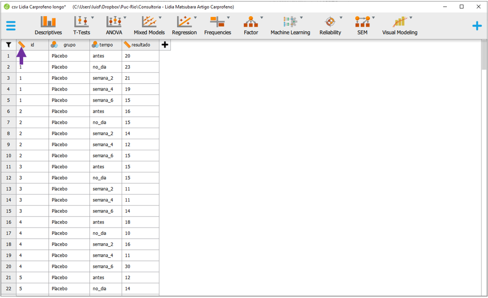
Uma lista de opções irá aparecer. Será necessário selecionar a opção nominal.
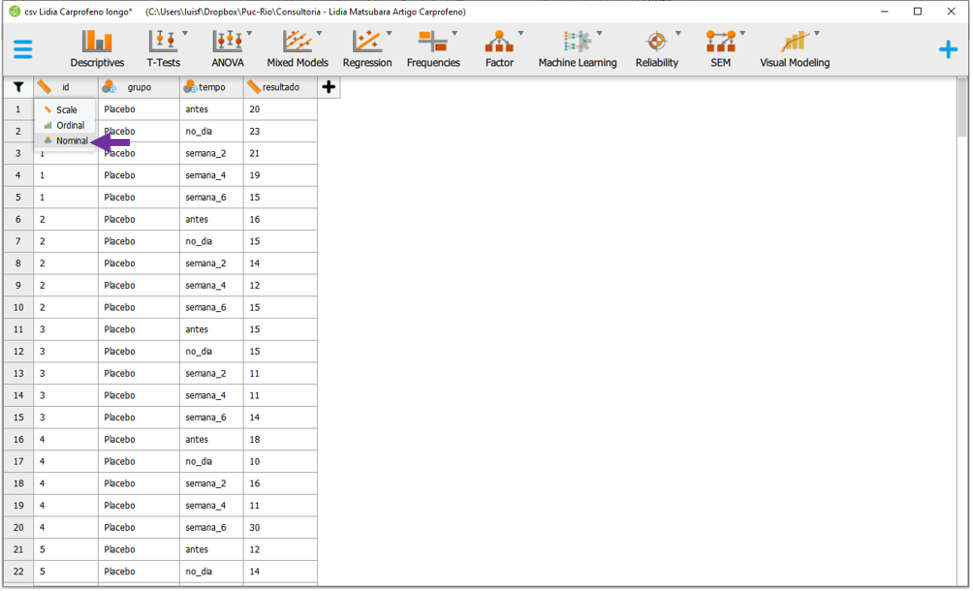
De maneira próxima ao que foi realizado no R, é importante apresentar tabelas e gráficos descritivos. Estes elementos auxiliam em uma primeira visualização do padrão das respostas. Para fazer isso, será necessário apresentar tabelas e gráficos descritivos. Para fazer isso, é necessário clicar em Descriptives.
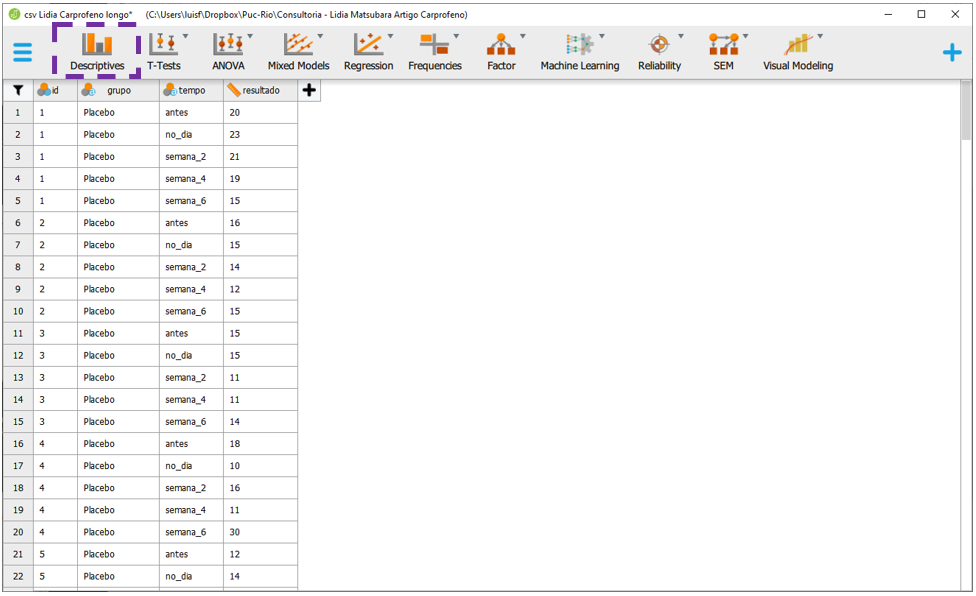
Ao clicar nesta opção, será possível eleger as variáveis que irão ser analisadas e as variáveis que irão funcionar como agrupadores. Na prática, a listaVariables irá reunir as variáveis dependentes, enquanto a variável independente será colocada na seção Split. É importante atentar à opção Frequency tables (nominal and ordinal), que deve ser marcada quando o nível de medida da variável de interesse for nominal ou ordinal.
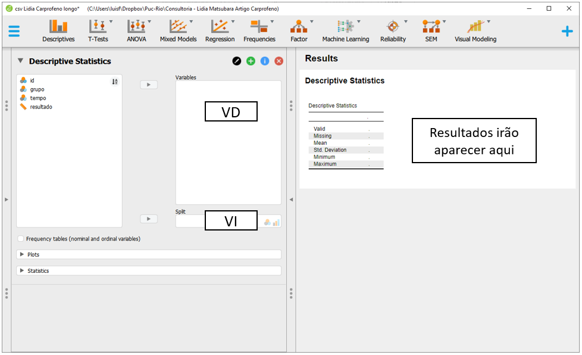
O JASP permite fazer gráficos com apenas 1 agrupador. É possível, então, apresentar inicialmente os resultados pelo tempo e, em seguida, pelo grupo. Para isso, será necessário arrastar a variável tempo para o local de Split e a variável resultado para o local Variables. Ao fazer isso, o JASP irá preencher a tabela com várias informações descritivas.
É importante se lembrar que o JASP não está considerando o grupo que o participante foi alocado.
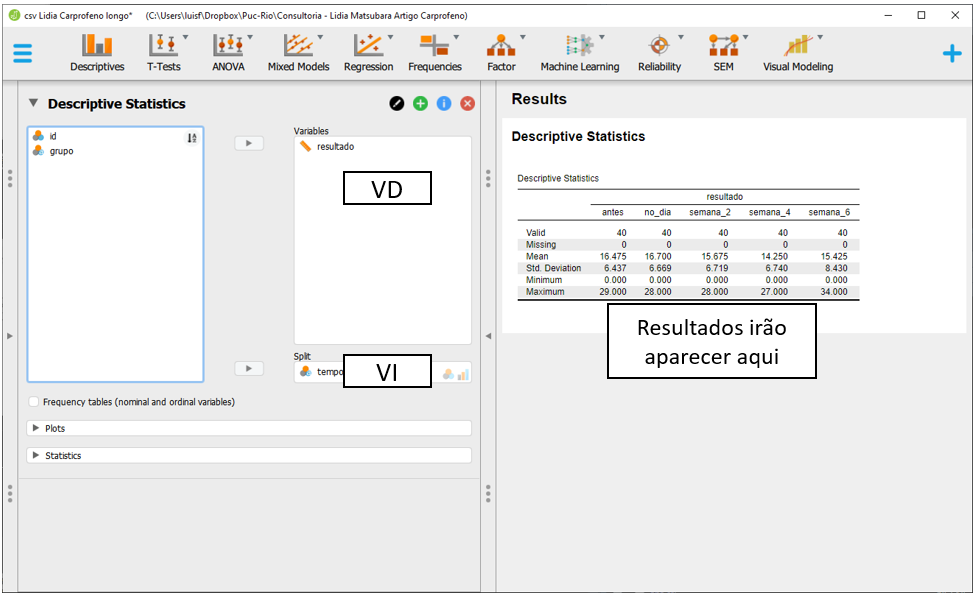
Gráficos permitem um entendimento mais facilitado dos resultados. Para fazer isso, será necessário clicar na opção Plots.
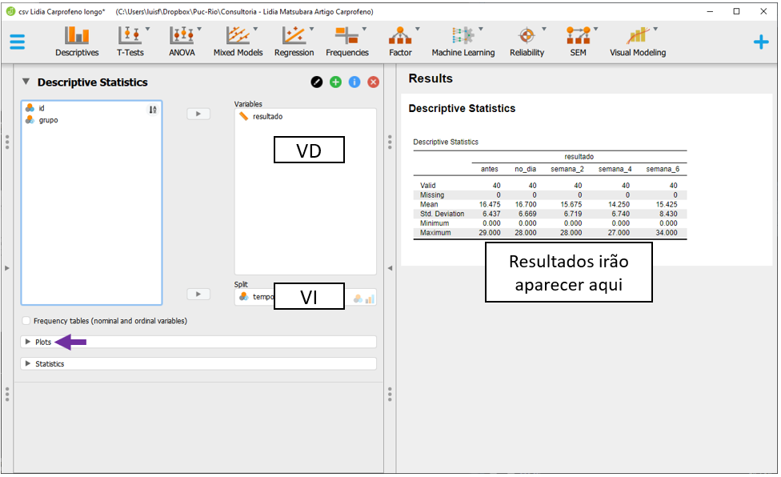
Em seguida, será possível selecionar o Boxplot e Boxplot element. O gráfico aparecerá abaixo da tabela e irá apresentar diferentes informações estatísticas da distribuição dos resultados das variáveis em função do momento da pesquisa.
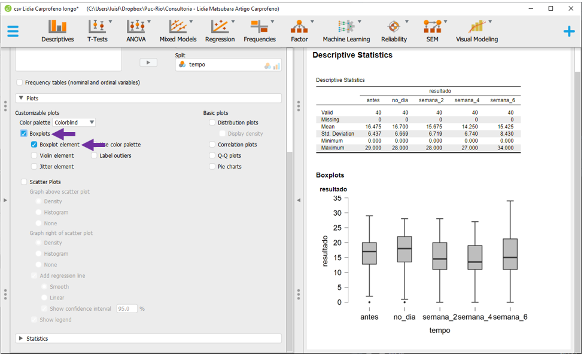
Para gerar as estatísticas descritivas e a apresentação gráfica sobre a relação entre os resultados e os respectivos grupos, será necessário, substituir a variável tempo por grupo no espaço Split.
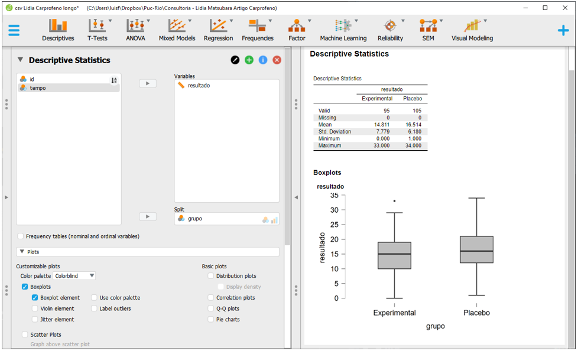
Apesar dessas análises serem informativas, esta versão do JASP não integra todas as três variáveis desejadas nas tabelas e gráficos produzidos. Isso será feito posteriormente.
Para realizar um Modelos Linear Misto, será necessário clicar em Mixed Models e Linear Mixed Models.
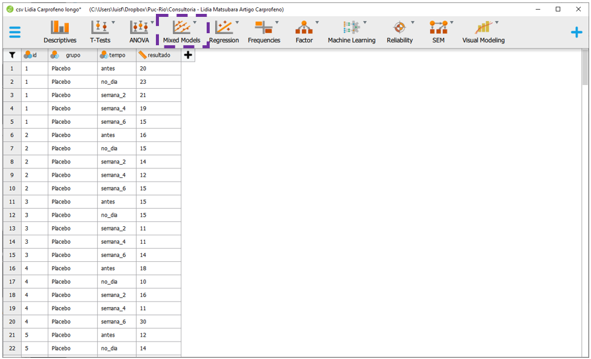
Após fazer isso, a interface do programa será próxima à apresentada abaixo.
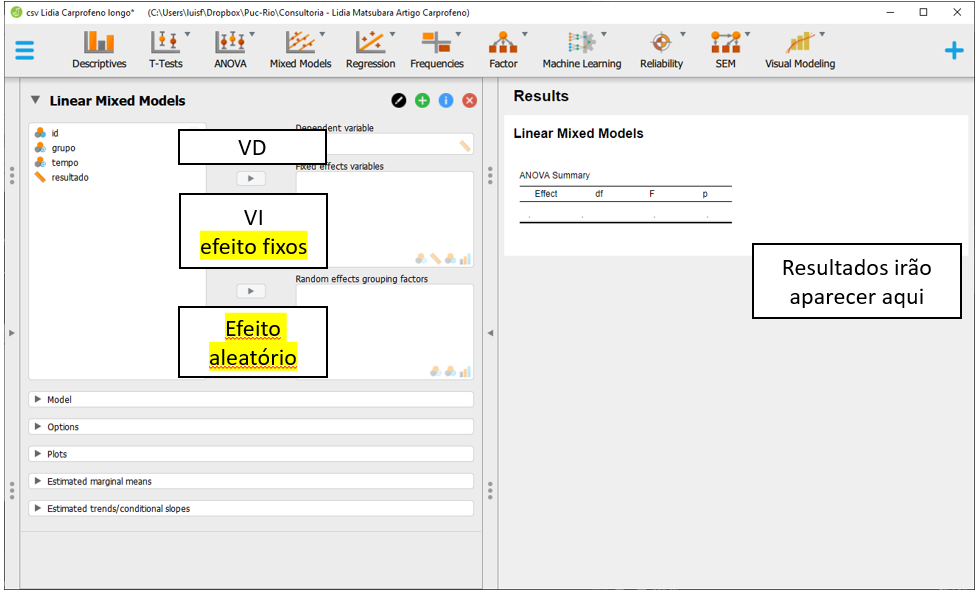
O localDependent Variable irá reunir a VD e a variável resultado deverá ser arrastada até este espaço. Fixed effects é o local que irá reúnir as variáveis entre participantes e as variáveis tempo e grupo devem ser inseridas neste local. O Random effects grouping factors irá reunir a o efeito aleatório e id deverá ser arrastado para lá.
Ao fazer isso, o JASP irá realizar a análise e apresentar, automaticamente, os resultados.
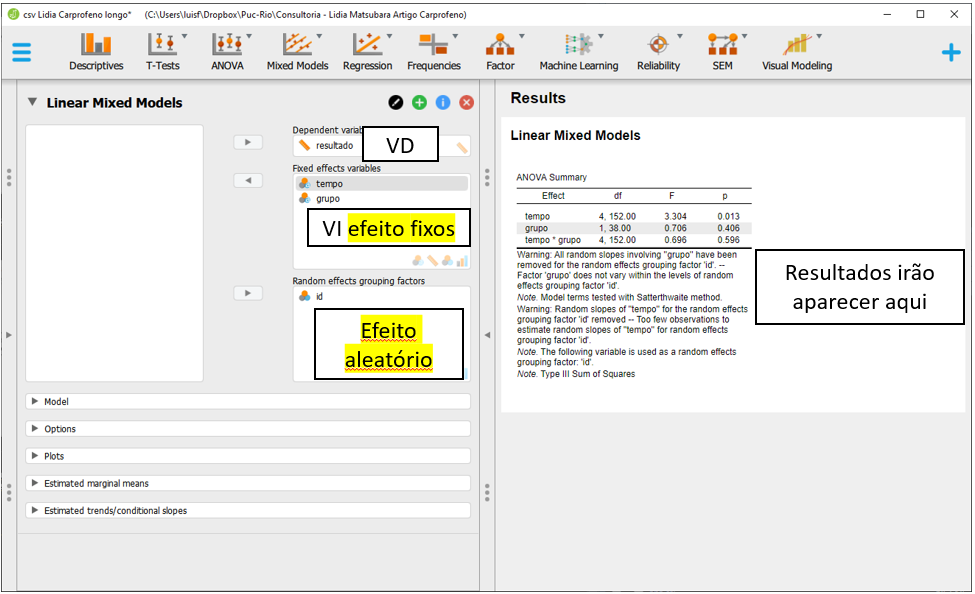
Esses resultados são baseados na configuração padrão do JASP, que define tanto o intercepto como a inclinação como efeitos aleatórios. No entanto, nesta pesquisa, apenas o intercepto foi definido como aleatório. Para alterar essa configuração, será necessário clicar na opção Model, na parte esquerda do programa.

Todas as caixas de seleção na seção Random effects devem ser desmarcadas.

Após isso feito, o JASP irá refazer as análises e apresentar os resultados, mudando também as mensagens de aviso.
A interpretação dos resultados agora pode ser feita, sempre começando pela interação. A interação Grupo x Tempo não foi significativa (F(4, 152) = 0.696, p = 0.596). O efeito do Grupo também não foi significativo (F(3, 38) = 0.706, p = 0.406). De maneira distinta, o Tempo foi um preditor significativo (F(4, 152) = 3.304, p = 0.013).

Esta versão do JASP não oferece nenhum recurso para avaliar os pressupostos do modelo. Dessa maneira, isso não será realizado.
Apresentações gráficas são extremamente importantes e para fazer isso, é necessário clicar em Plots
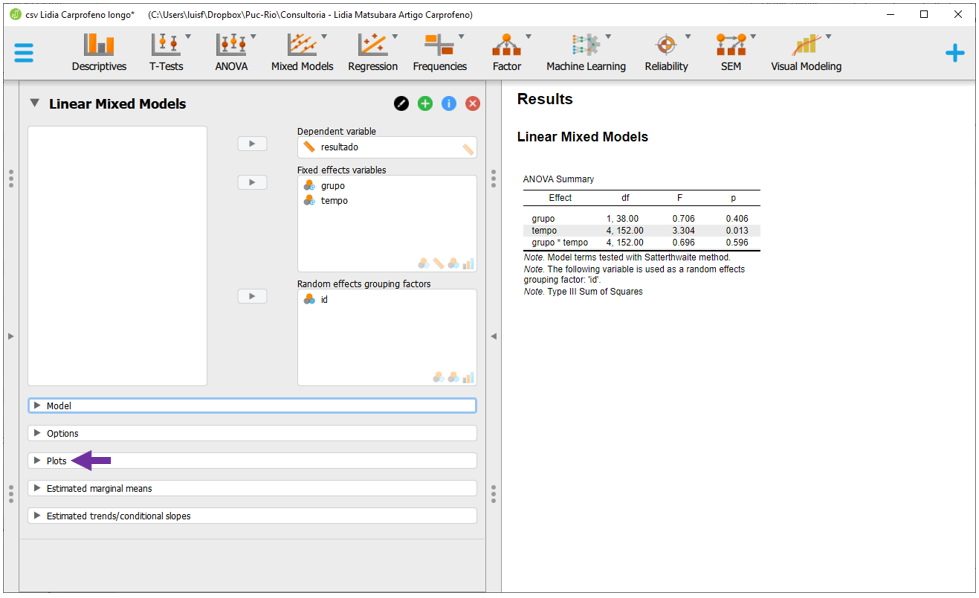
A variável Tempo deve ser inserida no eixo horizontal (Horizontal axis) e a variável grupo em Separated lines. As outras opções não precisam ser alteradas. O gráfico será gerado automaticamente e servirá como um recurso extra para entender os resultados.
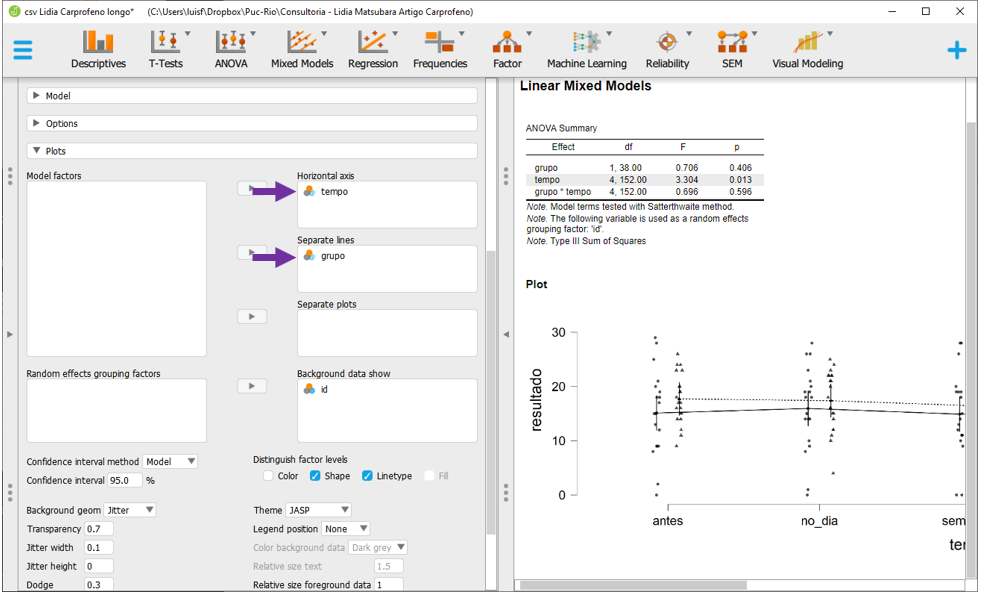
Notas: Infelizmente, o JASP não realiza um gráfico completo dessa maneira na seçãoDescriptives, tal como apresentado. Por vezes, será necessário primeiro rodar integralmente o Modelo Linear misto para depois gerar esta apresentação. Quase sempre, o eixo X recebe a variável com maior quantidade de níveis. Essa pesquisa não teve resultados significativos e, em função disso, testes post hoc não foram realizados. Entretanto, frequentemente os resultados são significativos e a mecânica das comparações pareadas é próxima ao que foi demonstrado no capítulo de ANOVA Fatorial.
14.4 Escrita dos resultados
Um dos principais objetivos em delineamentos que contem com termos de interação é verificar se o efeito de uma variável depende dos níveis de outra. Nesta pesquisa, isso ocorreria caso os resultados obtidos dependessem da relação entre o tempo decorrido do tratamento e do grupo em que o participante tivesse sido alocado. No entanto, os resultados da interação não foram significativos, indicando que isso não parece ter ocorrido. Uma vez que o efeito principal do tempo foi significativo, é possível concluir que o tempo é um preditor significativo nos resultados, independente do grupo em que o participante se encontra.
Abaixo uma sugestão de escrita baseada nas recomendações da American Psychological Association (APA).
Como escrever os resultados
Os dados foram analisados através de um Modelo Linear de Efeitos Mistos, que verificou o efeito do tempo, do grupo, a interação entre esses dois preditores. Neste modelo, um intercepto aleatório foi definido para cada participante em com isso, essa análise levou em consideração tanto efeitos fixos quanto aleatórios. Os resultados permitiram concluir que Não há interação significativa tempo x grupo (F(4, 152 = 0.696), p = 0.596), bem como não há efeito significativo do grupo (F(1, 38 = 0.706), p = 0.406). Em outra direção, o efeito o tempo teve efeito significativo nos resultados (F(4, 152 = 3.304), p = 0.013).
14.5 Resumo
- O Modelo Linear de Efeitos Mistos (LMM) oferece maior versatilidade à ANOVA de medidas repetidas
- A ANOVA tem como pressuposto Normalidade e Esfericidade, enquanto o LMM apenas Normalidade dos resíduos
- Os resultados frequentemente encontrados em ambos os modelos vão na mesma direção
- A implementação computacional é mais trabalhosa
- A escrita apresenta algumas particularidades relacionadas à cada modelo.
14.6 Pesquisas adicionais
- Effects of Aerobic Training versus Breathing Exercises on Asthma Control: A Randomized Trial (DOI: 10.1016/j.jaip.2020.06.042) Nesta pesquisa, 54 pacientes com asma foram aleatoriamente selecionados para receberem ou um tratamento baseado em exercícios aeróbicos ou um tratamento baseado em técnicas de respiração. Os pesquisadores acompanharam os participantes por 3 meses e concluíram que, em alguns aspectos, o grupo de exercícios aeróbicos teve uma melhora significativamente maior do que o grupo de técnicas respiratórias. Esses dados foram analisados por mim, apesar de não constar no manuscrito.